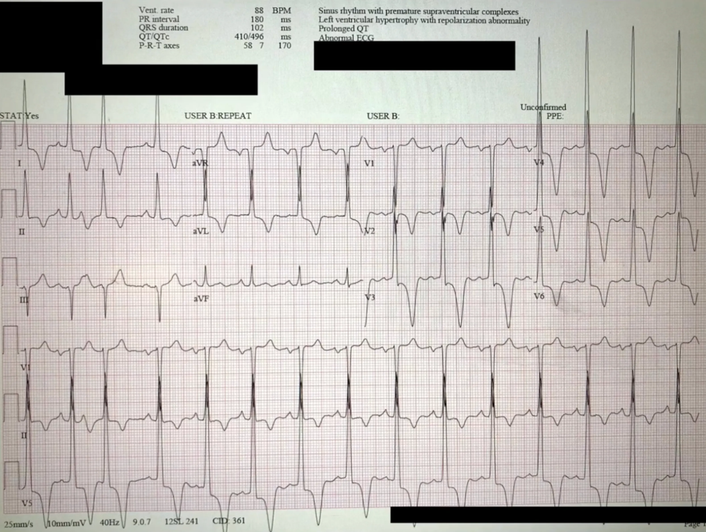
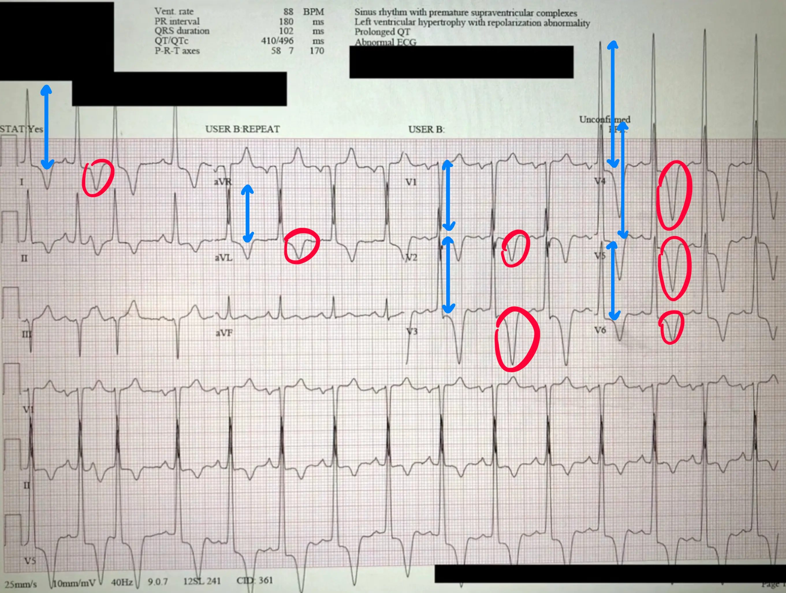

Fall 4b
Ein 52-jähriger Mann wird in eine Notaufnahme in Chicago gebracht, nachdem er zuhause beobachtet synkopiert ist. Als er stehend auf dem Klo sein Geschäft verrichten wollte, wurde ihm schwarz vor Augen und er ist zusammengesackt, ohne gekrampft zu haben und ohne ein Traume erlitten zu haben. In der Notaufnahme ist er hellwach und orientiert, mit einem leichten Schwindel. Keine Luftnot, keine AP-Symptomatik, kein Drogenkonsum und eine unauffällige Familienanamnese. Alle Vitalzeichen und jegliche neurologischen Untersuchungen sind komplett unauffällig. Als Vorerkrankung gibt er an einen Bluthochdruck zu haben.
EKG

Apikale Hypertrophe Kardiomyopathie
Bei der ApHCM handelt es sich, um eine Variante der Hypertrophen Kardiomyopathie,
bei der die Hypertrophie vorwiegend die linksventrikuläre Apex betrifft. Die Gefahr für eine linksventrikuläre
Ausflusstraktobstruktion ist niedrig, dafür begünstigt diese Erkrankung die Bildung von apikalen Aneurysmen.
Diese können Ventrikuläre Arrhythmien verursachen, sowie eine Embolie begünstigen und können zum Herzversagen
führen.
Was eine ApHCM sichtbar im EKG macht, ist das Yamaguchi-Zeichen: Tiefe symmetrische T-Wellen in den präkordialen
Ableitungen (können sich auch in die lateralen Ableitungen ausweiten).
Da es sich um eine Hypertrophe Erkrankung handelt, sind auch hier die
Amplituden sehr hoch
